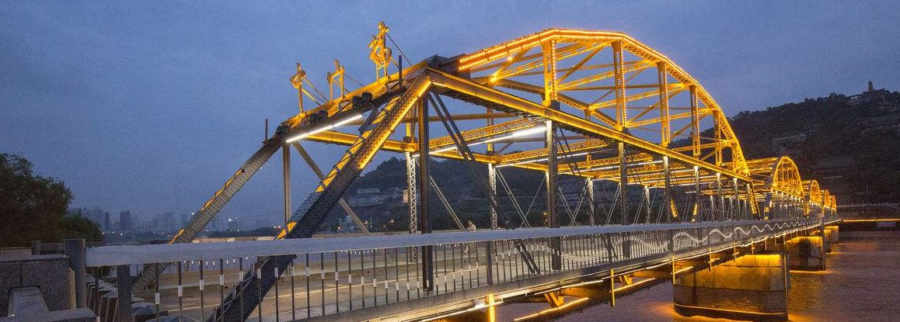
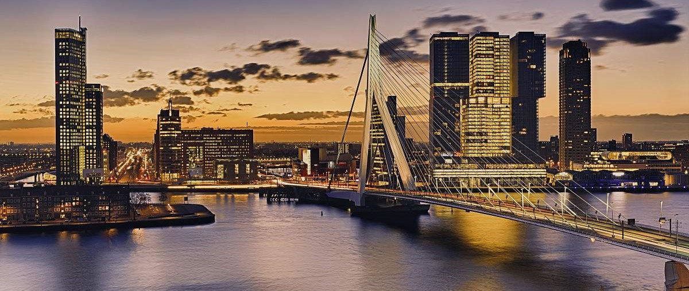

西安
西安，古称长安、镐京，是陕西省会、副省级市、关中平原城市群核心城市、丝绸之路起点城市、"一带一路"核心区、中国西部地区重要的中心城市，国家重要的科研、教育、工业基地。西安是中国四大古都之一 ，联合国科教文组织于1981年确定的“世界历史名城”美媒评选的世界十大古都之一。
兰州
兰州，简称“兰”，是甘肃省省会，中国西北地区重要的工业基地和综合交通枢纽，西部地区重要的中心城市之一，西陇海兰新经济带重要支点，西北地区第二大城市，是我国华东、华中地区联系西部地区的桥梁和纽带，西北的交通通信枢纽和科研教育中心，丝绸之路经济带的重要节点城市，也是中国人民解放军西部战区陆军机关驻地。

乌鲁木齐
乌鲁木齐，通称“乌市”，旧称迪化，是新疆维吾尔自治区首府，全疆政治、经济、文化、科教和交通中心。自治区面积为14216.3平方公里，辖7区1县，2017年末户籍人口为222万。乌鲁木齐地处中国西北，新疆中部，天山北麓，亚欧大陆腹地，毗邻中亚各国，有“亚心之都”的称呼。是世界上最内陆、距离海洋和海岸线最远的大型城市。
撒马尔罕
撒马尔罕是中亚最古老的城市之一，关于它的记载最早可以追溯到公元前5世纪，善于经商的粟特人把撒马尔罕建造成一座美轮美奂的都城。公元前4世纪，当马其顿帝国的亚历山大大帝攻占该城时不禁赞叹：“我所听说到的一切都是真实的，只是撒马尔罕要比我想象中更为壮观。”
德黑兰
德黑兰（波斯语：تهران、Tehrān）是伊朗的首都，同时也是德黑兰省省会，总人口达8,429,807人，它是伊朗最大的城市，并且是西亚地区最大的城市之一。德黑兰有许多历史上著名的清真寺、基督教堂、犹太会堂及琐罗亚斯德教的火庙。

伊斯坦布尔
伊斯坦布尔是土耳其政治、经济、文化、金融、新闻、贸易、交通中心，世界著名的旅游胜地，繁华的国际大都市之一。 伊斯坦布尔之所以闻名于世，主要是其得天独厚的地理位置。在亚洲大陆最西端的黑海与地中海之间，有一条至关重要的“黄金水道”，兵家必争之地。
莫斯科
莫斯科（Moscow），是俄罗斯联邦首都、莫斯科州首府。莫斯科是俄罗斯的政治、经济、文化、金融、交通中心以及最大的综合性城市，也是俄罗斯重要的工业制造业中心、科技、教育中心。是一座国际化大都市。

鹿特丹
鹿特丹是荷兰第二大城市，1980年代曾是世界上第一大港口，西依北海，东溯莱茵河、多瑙河，可通至里海，有“欧洲门户”之称。鹿特丹也是一座著名旅游城市，它每天要接待许多来自世界各地的游客。市内有许多博物馆、画廊、公园、图书馆、电影院和音乐厅。人民生活不仅有着浓郁的文化气息，而且还可以充分利用休闲时间去寻求生活的乐趣。

威尼斯
威尼斯（Venice）是意大利东北部著名的旅游与工业城市，也是威尼托地区的首府。威尼斯曾经是威尼斯共和国的中心，被称作“亚得里亚海明珠”，十字军进行十字军东征时也曾在这里集结，堪称世界最浪漫的城市之一。 威尼斯市区涵盖意大利东北部亚得里亚海沿岸的威尼斯潟湖的118个岛屿和邻近一个半岛，更有117条水道纵横交叉。